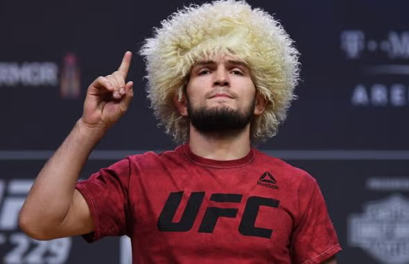

Üdvözöllek!
Ez az oldal Khabib Nurmagomedov, az orosz származású veretlen MMA harcos életét, pályafutását és eredményeit mutatja be. Ő volt a leghosszabb ideig uralkodó UFC könnyűsúlyú bajnok , a címet 2018 áprilisa és 2021 márciusa között birtokolta. 29 győzelemmel és vereség nélkül veretlenül vonult vissza . Nurmagomedovot széles körben minden idők legnagyobb vegyes harcművészei között tartják számon.
